Bayesian computation: MCMC methods
key notions
- Metropolis Hastings
- Hamiltonian Monte Carlo
- Stan
- diagnostics
\[ \definecolor{firebrick}{RGB}{178,34,34} \newcommand{\red}[1]{{\color{firebrick}{#1}}} \] \[ \definecolor{mygray}{RGB}{178,34,34} \newcommand{\mygray}[1]{{\color{mygray}{#1}}} \] \[ \newcommand{\set}[1]{\{#1\}} \] \[ \newcommand{\tuple}[1]{\langle#1\rangle} \] \[\newcommand{\States}{{T}}\] \[\newcommand{\state}{{t}}\] \[\newcommand{\pow}[1]{{\mathcal{P}(#1)}}\]
recap
Bayes rule for data analysis:
\[\underbrace{P(\theta \, | \, D)}_{posterior} \propto \underbrace{P(\theta)}_{prior} \times \underbrace{P(D \, | \, \theta)}_{likelihood}\]
normalizing constant:
\[ \int P(\theta') \times P(D \mid \theta') \, \text{d}\theta' = P(D) \]
easy to solve only if:
- \(\theta\) is a single discrete variable with reasonably sized domain
- \(P(\theta)\) is conjugate prior for the likelihood function \(P(D \mid \theta)\)
- we are very lucky
Monte Carlo simulation
what’s the probability of a deadlock in solitaire?

Birth of MC methods at Los Alamos

Stanislaw Ulam

Nicholas Metropolis
Problem
- assume that \(x \sim X\) and that \(X\) is “unwieldy”
- we’d like to know some property \(F(X)\) of \(X\) that can be expressed as an expectation (where \(f(x)\) could be any useful transformation of single values \(x\)):
\[F(X) = \int P(X = x) \ f(x) \ \text{d}x\]
- examples of \(F(X)\) are the mean, median, variance, 95% HDI, or any cumulative probability, such as \(\int_{0.8}^\infty P(X = x) \ \text{d}x\)
dummy
solution: Monte Carlo sampling
- draw samples \(S = x_1, \dots x_n \sim X\) and compute:
\[F(S) = \frac{1}{N} \sum_{i = 1}^N f(x_i)\]
- if the samples are “good samples” (and if \(f\) is not crazy), this approximates the original expectation well:
\[F(S) \sim \mathcal{N}\left(\mathbb{E}_X, \frac{\text{Var}(f)}{N} \right)\]
Markov chains
Markov chain
intuition
a sequence of elements, \(x_1, \dots, x_n\) such that every \(x_{i+1}\) depends only on its predecessor \(x_i\) (think: probabilistic FSA)
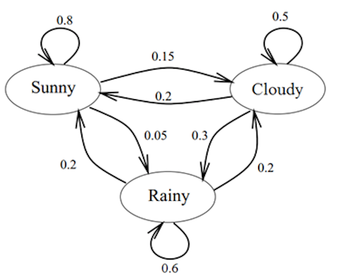
Markov property
\[ P(x_{n+1} \mid x_1, \dots, x_n) = P(x_{n+1} \mid x_n) \]
Markov Chain Monte Carlo methods
get sequence of samples \(x_1, \dots, x_n\) s.t.
- sequence has the Markov property (\(x_{i+1}\) depends only on \(x_i\)), and
- the stationary distribution of the chain is \(P\) (the target distribution).
dummy
consequences of Markov property
- non-independence -> autocorrelation
(nuisance)
- easy proof that stationary distribution is \(P\)
(reassuring)
- computationally efficient
(great)
- we can work with non-normalized probabilities dummy
(absolutely awesome)
Metropolis Hastings
island hopping

- set of islands \(X = \{x^s, x^b, x^p\}\)
- goal: hop around & visit every island \(x \in X\) proportional to its population \(P(x)\)
- think: “samples” \(x \sim P\)
- problem: island hopper can remember at most 2 islands’ population
- think: we don’t know the normalizing constant
Metropolis Hastings
let \(f(x) = \alpha P(x)\) (e.g., unnormalized posterior)
start at random \(x_0\), define probability \(P_\text{trans}(x_i \rightarrow x_{i+1})\) of going from \(x_{i}\) to \(x_{i+1}\)
- proposal \(P_\text{prpsl}(x_{i+1} \mid x_i)\): prob. of considering jump to \(x_{i+1}\) from \(x_{i}\)
- acceptance \(P_\text{accpt}(x_{i+1} \mid x_i)\): prob of accepting jump to proposal \(x_{i+1}\) \[P_\text{accpt}(x_{i+1} \mid x_i) = \text{min} \left (1, \frac{f(x_{i+1})}{f(x_{i})} \frac{P_\text{prpsl}(x_{i} \mid x_{i+1})}{P_\text{prpsl}(x_{i+1} \mid x_i)} \right)\]
- transition \(P_\text{trans}(x_i \rightarrow x_{i+1}) = P_\text{prpsl}(x_{i+1} \mid x_i) \ P_\text{accpt}(x_{i+1} \mid x_i)\)
properties of MH
motto: always up, down with probability \(\bfrac{f(x^{i+1})}{f(x^{i})}\)
ratio \(\bfrac{f(x^{i+1})}{f(x^{i})}\) means that we can neglect normalizing constants
\(P_\text{trans}(x^i \rightarrow x^{i+1})\) defines transition matrix -> Markov chain analysis!
for suitable proposal distributions, it can be shown that:
- stationary distribution exists (first left-hand eigenvector)
- every initial condition converges to stationary distribution
- stationary distribution is \(P\)
7-island hopping
7-island hopping, cont.
influence of proposal distribution
some fake data to fit
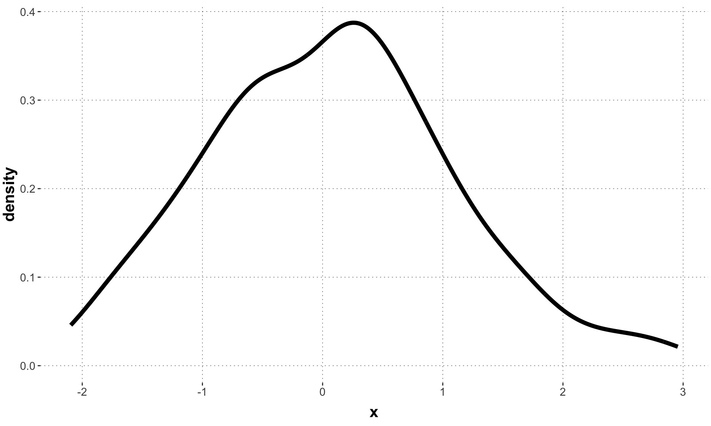
mean sd
0.07321794 1.01468222 homebrew MH algorithm
MH = function(f, iterations = 50, chains = 2, burnIn = 0){
out = array(0, dim = c(chains, iterations - burnIn, 2))
dimnames(out) = list("chain" = 1:chains,
"iteration" = 1:(iterations-burnIn),
"variable" = c("mu", "sigma"))
for (c in 1:chains){
mu = runif(1, min = -4, max = 4)
sigma = runif(1, min = 0, max = 4)
for (i in 1:iterations){
muNext = mu + runif(1, min = -1.25, max = 1.25)
sigmaNext = sigma + runif(1, min = -0.25, max = 0.25)
rndm = runif(1, 0, 1)
if (f(mu, sigma) < f(muNext, sigmaNext) |
f(muNext, sigmaNext) >= f(mu, sigma) * rndm) {
mu = muNext
sigma = sigmaNext
}
if (i >= burnIn){
out[c,i-burnIn,1] = mu
out[c,i-burnIn,2] = sigma
}
}
}
return(coda::mcmc.list(coda::mcmc(out[1,,]),
coda::mcmc(out[2,,])))
}MCMC samples from a hand-made MH algorithm
# A tibble: 200,000 × 4
Iteration Chain Parameter value
<int> <int> <fct> <dbl>
1 1 1 mu 0.124
2 2 1 mu 0.124
3 3 1 mu 0.124
4 4 1 mu 0.124
5 5 1 mu 0.124
6 6 1 mu 0.124
7 7 1 mu 0.124
8 8 1 mu 0.124
9 9 1 mu 0.124
10 10 1 mu 0.124
# … with 199,990 more rows# A tibble: 2 × 4
Parameter HDI_lower mean HDI_upper
<fct> <dbl> <dbl> <dbl>
1 mu -0.0710 0.0727 0.206
2 sigma 0.920 1.02 1.12 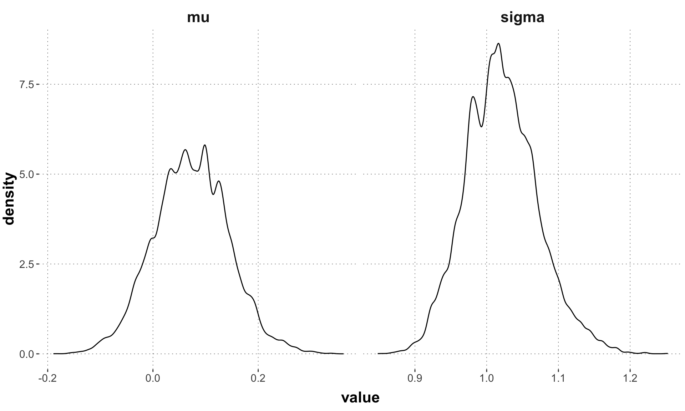
Hamiltonian MC
Hamiltonian motion
- Hamiltonian movement
- reformulates classical mechanics
- precursor of statistical physics
- closed system differential equations
- potential vs. kinetic energy
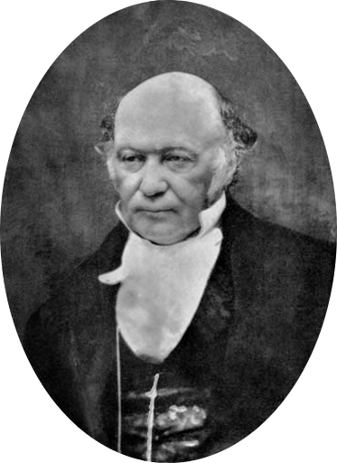
dummy

example 1
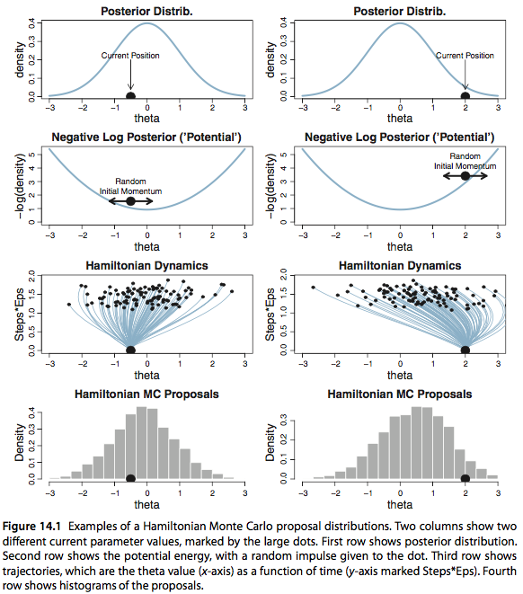
tuning parameters
- momentum
- e.g., standard deviation of Gaussian that determines initial jiggle
dummy
- step size
- how big a step to take in discretization of gradient
dummy
- number of steps
- how many steps before producing the proposal
example 2
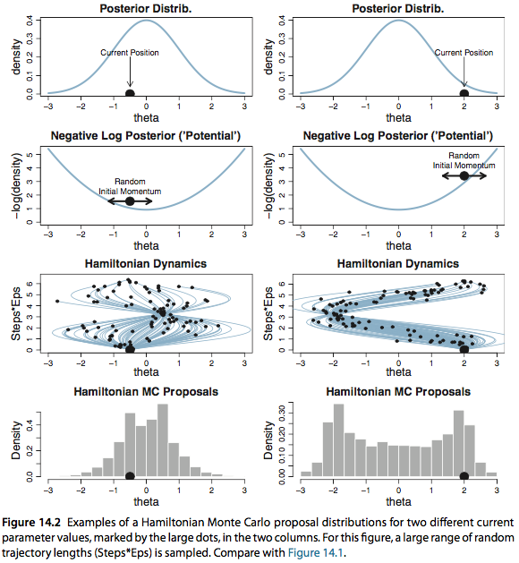
example 3
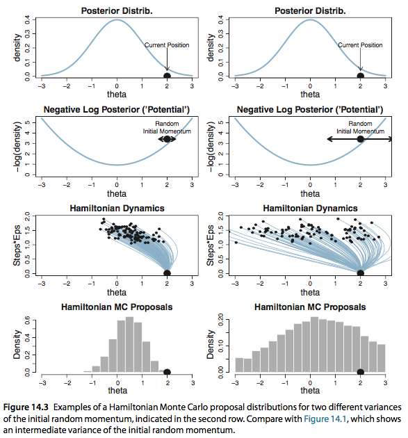
Stan
history
BUGS project (1989 - present ???)
- Bayesian inference Using Gibbs Sampling
- developed by UK-based biostatisticians
WinBUGS (1997 - 2007)
- Windows based; with GUI
- component pascal
Stan (overview)
actively developed by Andrew Gelman, Bob Carpenter and others
uses HMC and NUTS, but can do variational Bayes and MAPs too
optimized performance for certain kinds of hierarchical models (e.g., hierarchical GLMs)
written in C++
cross-platform
interfaces: command line, Python, Julia, R, Matlab, Stata, Mathematica
many additional packages/goodies
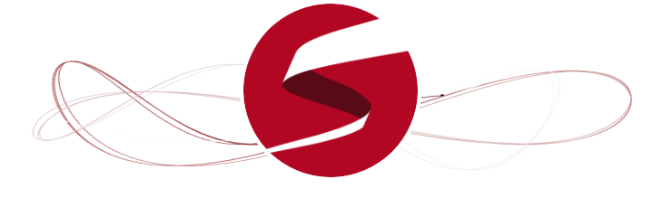
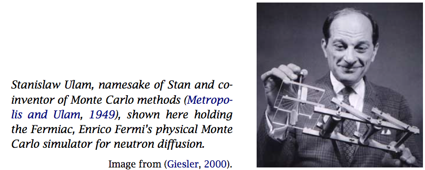
example: inferring a coin’s bias with Stan
Content of file binomial.stan
Content of file binomial.r
model as Bayesian network
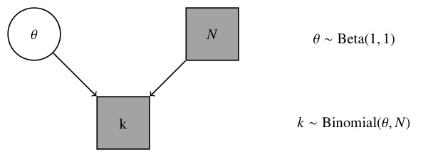
Output: stanfit object
Inference for Stan model: binomial.
4 chains, each with iter=2000; warmup=1000; thin=1;
post-warmup draws per chain=1000, total post-warmup draws=4000.
mean se_mean sd 2.5% 25% 50% 75% 97.5% n_eff Rhat
theta 0.31 0.00 0.09 0.15 0.25 0.31 0.37 0.50 1648 1
lp__ -16.56 0.02 0.73 -18.67 -16.70 -16.29 -16.10 -16.05 1583 1
Samples were drawn using NUTS(diag_e) at Sun Feb 19 16:40:32 2023.
For each parameter, n_eff is a crude measure of effective sample size,
and Rhat is the potential scale reduction factor on split chains (at
convergence, Rhat=1).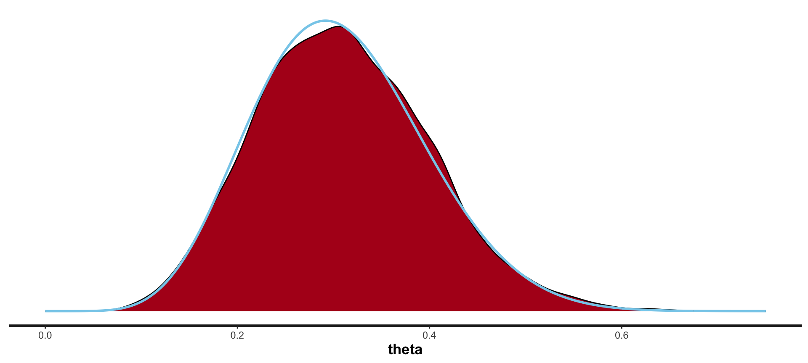
added goodies
variational Bayes
idea
approximate posterior distribution by a well-behaved function
concretely
find parametric function \(F(\theta \mid \phi)\) and look for best-fitting parameters:
\[\phi^* = \arg\min_{\phi} \text{KL}(F(\theta \mid \phi) \ \ || \ \ P(\theta \mid D) ) \]
where KL is the Kullback-Leibler divergence:
\[ \text{KL}(P || Q) = \int P(x) \log \frac{P(x)}{Q(x)} \ \text{d}x \]
maximum a posteriori (MAP)
the MAP is the most likely parameter vector under the posterior distribution:
\[ \theta^* = \arg\max_{\theta} P(\theta \mid D) \]
for flat (possibly improper) priors the MAP is the MLE
MCMC sample diagnostics
problem statements
convergence/representativeness
- we have samples from MCMC
- in the limit, samples must be representative of \(P\)
- how do we know that our meagre finite samples are representative?
efficiency
- ideally, we’d like the shortest samples that are representative
- how do we measure that we have “enough” samples?
general idea behind many practical solutions
compare how similar several independent sample chains are
look at the temporal development of single chains
packages to analyze MCMC chains
coda and ggmcmc basically do the same thing, but they differ in, say, aesthetics
rstan has its own tools for diagnosis and relies on bayesplot for plotting
brms inherits plotting and diagnostic functions from rstan

Posterior densities: Stan vs homebrew
trace plots
- a trace plot plots the samples (separately for each chain) in the order in which they were gathered (by iteration)
- did the chains converge to the same stable range of values?
visual inspection of convergence
trace plots from multiple chains should look like:
a bunch of hairy caterpillars madly in love with each other
examining sample chains: beginning
examining sample chains: rest
burn-in (= warm-up) & thinning
burn-in (warm-up)
remove initial chunk of sample sequence to discard effects of (random) starting position
thinning
only consider every \(i\)-th sample to remove autocorrelation
R hat
\(\hat{R}\)-statistics,
- a.k.a.:
- Gelman-Rubin statistics
- shrink factor
- potential scale reduction factor
- idea:
- compare variance within a chain to variance between chains
- in practice:
- use software to compute it
- aim for \(\hat{R} \le 1.1\) for all continuous variables
R hat for each parameter
autocorrelation
autocorrelation in ‘ggmcmc’
effective sample size
- intuition:
- how many samples are “efficient, actual samples” if we strip off autocorrelation
- definition:
\[\text{ESS} = \frac{N}{ 1 + 2 \sum_{k=1}^{\infty} ACF(k)}\]